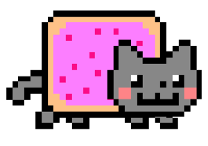

Комбинатоорика — раздел математики, посвящённый решению задач, связанных
с выбором и расположением элементов некоторого (чаще всего конечного)
множества в соответствии с заданными правилами.
Meowcat - интерактивный веб-задачник с решениями и мтериалами для
прочтения
Начните завтра! Зачем начинать сегодня то, что можно начать завтра?
Начать решать задачи